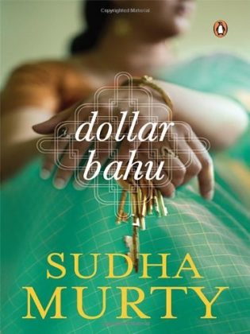

Summary:
About The BookDollar Bahu is the story of how money can wreak havoc in the life of any family, if things spin out of control. Vinuta is a young woman, who marries Girish, who is a bank clerk. Vinuta then begins to live in Bangalore, with Girish's family and starts to get accustomed to her new family. She gets used to this new change quite well and spends her life looking after her in-laws and her husband. She even tries her level best to ignore the taunts of her mother-in-law, Gouramma. Things take a turn for the worse, when Chandru, Girish's elder brother, gets married. Chandru is based in the US, with his wife, the ‘Dollar Bahu' and they live quite an extravagant life, because of the fact that Chandru earns well. Vinuta now faces constant comparisons between her and her new sister-in-law, much to Vinuta's dismay. Now Gouramma, Vinuta's mother-in-law, decides to pay Chandru a visit in the US, which turns things around.Gouramma now looks at the other side of life in the US, where she realizes that she will never get the respect there, which she gets in India. Even though middle-class life in India is difficult and bound by rules, it is one that is full of love and respect. Can this enlightening trip bring about a change in Vinuta and Gouramma's relationship?The Dollar Bahu has been published by Penguin India, in the year 2007 and is available in paperback.Key Features The story is one that middle-class Indian people can easily relate to. The novel portrays the delicate relationships that exist in every family in a heart-touching way.